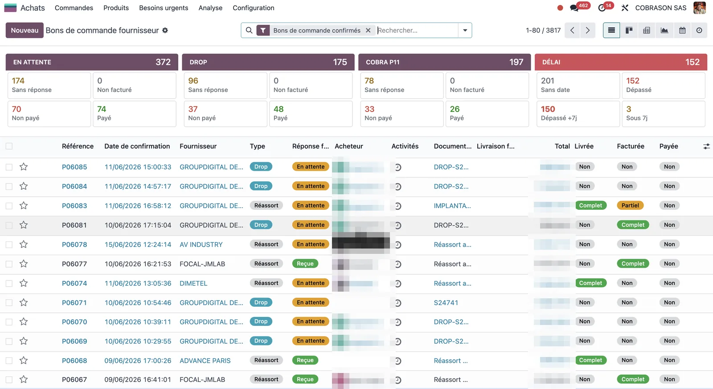

Cobra · Dev
L'agent factures passe en prod : autonome sur Scaleway
Contexte
L'agent de traitement des factures fournisseurs avait été entièrement cadré côté conception : architecture multi-agents, matching ligne par ligne contre la commande, Adaptive Cards Teams. Restait l'essentiel : le faire tourner seul, hors de mon ordinateur. C'est fait — il est en prod sur Scaleway.
Le déclencheur réel : Odoo est en place depuis février 2025, mais la chaîne commande → facture → paiement n'a jamais été appliquée proprement. Mesuré en lecture seule sur la base : 1 524 factures (≈ 2 M€) saisies sans aucun lien à une commande, et 241 impayées de plus de 2 mois (600 k€). Le coût de la dérive humaine — exactement ce que l'agent doit empêcher de se reproduire.
Ce qui a été mis en prod
- Hébergement autonome : instance Scaleway (VM
BASIC3-X2C-4G, région Paris, ~36 €/mois). L'agent existe en dehors de mon poste. - Cron toutes les 15 min : lecture des mails → extraction (OCR + API Claude, modèle Opus 4.8) → matching ligne par ligne contre la commande Odoo → carte Teams. Un endpoint Flask en service systemd reçoit les clics de validation et écrit dans Odoo.
- Lecture des mails à la source via Microsoft Graph (flux applicatif) — pas d'IMAP. C'est ce qui rend l'agent vraiment autonome : plus besoin de lui transmettre quoi que ce soit.
- Rattachement garanti par construction : chaque ligne de facture créée pointe la ligne de commande exacte (3-way match natif Odoo). L'agent ne sait pas créer de facture « libre ». Anti-doublon + blocage si écart de prix > 5 %.
- Visibilité de la chaîne : 3 statuts ajoutés sur la commande fournisseur (Livrée / Facturée / Payée) + 3 sous-canaux Teams (À valider / À payer / Payées) qui reflètent l'état de paiement Odoo. Cobra n'ayant quasiment pas d'encours fournisseur, ce suivi facturé/payé n'est pas du confort comptable : c'est du pilotage de trésorerie.


Résultat & chiffres
Sur ~80 factures/semaine (volume mesuré), le temps humain passe de ~12 h/semaine (saisie + contrôle + lettrage manuels) à ~2-2,5 h (valider les cartes + traiter les cas en intervention) — soit ~9-10 h/semaine économisées. Ce poste mobilisait jusque-là un temps plein dont une dizaine d'heures seulement étaient réellement productives.
Mais le vrai gain n'est pas le temps : 100 % de ce que l'agent crée est lié à sa commande et contrôlé en prix. Il ne nettoie pas le passé (les ~2 M€ détachés restent un chantier de régularisation) — il garantit que le futur ne se salit plus.
Ce qui reste honnête à dire
- L'agent ne fait pas le lettrage / rapprochement bancaire : le paiement et le batch SEPA restent humains. Il apporte de la visibilité, pas l'exécution.
- Les cartes Teams ne se mettent pas à jour « en place » (limite des webhooks Power Automate) : chaque changement d'état poste une nouvelle carte miroir. Le live-update par bot Teams est la prochaine étape.
- Les secrets sont dans un
.envprotégé sur l'instance, pas encore dans un coffre dédié — premier durcissement sur la liste.
Stack
Python 3.14, API Claude (Opus 4.8), pdfplumber + Tesseract OCR (fr/en) + Poppler, pydantic, Flask (HMAC), Adaptive Cards v1.5 via Power Automate, Microsoft Graph, Odoo 18 Enterprise (XML-RPC : account.move, account.move.line, purchase.order, product.supplierinfo, account.payment), instance Scaleway (cron + systemd).